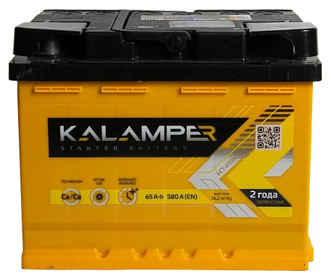

Термоконтроль заряда KALAMPER
Запатентованный процесс формирования пластин при постоянном контроле температуры электролита — ключевая технология KALAMPER, которая увеличивает ресурс аккумулятора вдвое по сравнению с обычными батареями.
Перегрев в процессе заряда — главная причина деградации свинцовых пластин. Когда температура электролита превышает допустимый порог, активная масса теряет сцепление с решёткой, а кристаллическая структура оксида свинца необратимо разрушается. Именно этот процесс сокращает жизнь большинства дешёвых аккумуляторов до 2–3 лет.
Как работает термоконтроль
В технологии KALAMPER процесс первичного формирования — самый ответственный этап производства — выполняется на оборудовании нового поколения, которое непрерывно измеряет температуру электролита в каждой ячейке и автоматически корректирует ток заряда, не допуская перегрева.
Результат: пластины набирают активную массу равномерно, кристаллическая структура PbO₂ формируется правильно и остаётся стабильной на протяжении многих лет эксплуатации. Срок службы такого аккумулятора в 2 раза превышает ресурс батарей, заряженных по стандартному неконтролируемому циклу.
Что это значит для вас
- Аккумулятор служит 4+ лет при соблюдении условий эксплуатации
- Ёмкость почти не снижается до самого конца срока службы
- Пусковой ток остаётся стабильным даже при низком уровне заряда
- Меньше замен — меньше затрат за весь период владения автомобилем
Технология термоконтроля — это не маркетинговое заявление, а измеримый параметр: каждый аккумулятор KALAMPER проходит контроль ресурса по стандарту EN 50342-1, подтверждающий заявленные характеристики.
Найдите дилера
KALAMPER
Более 200 точек продаж по всей России. Оригинальная продукция с официальной гарантией 24 месяца.
